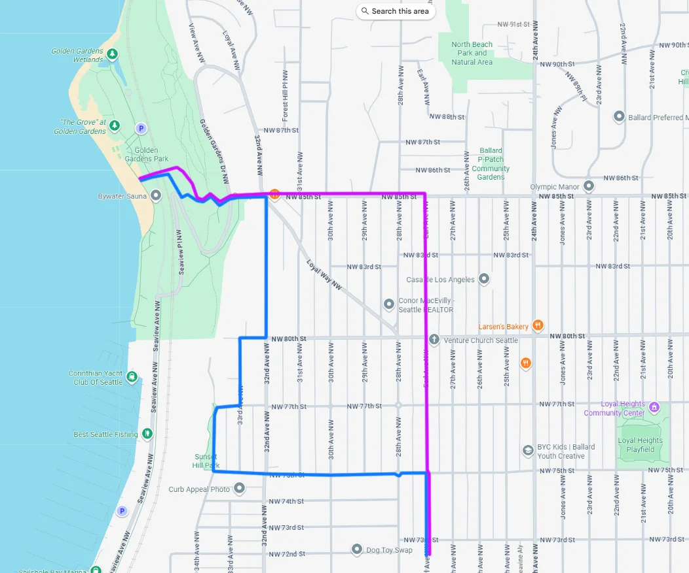
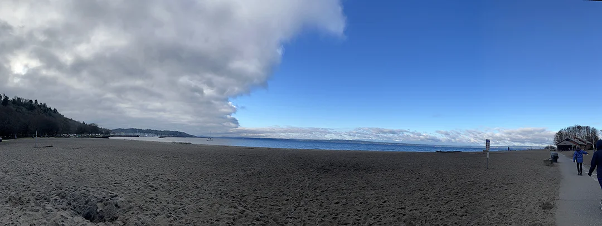
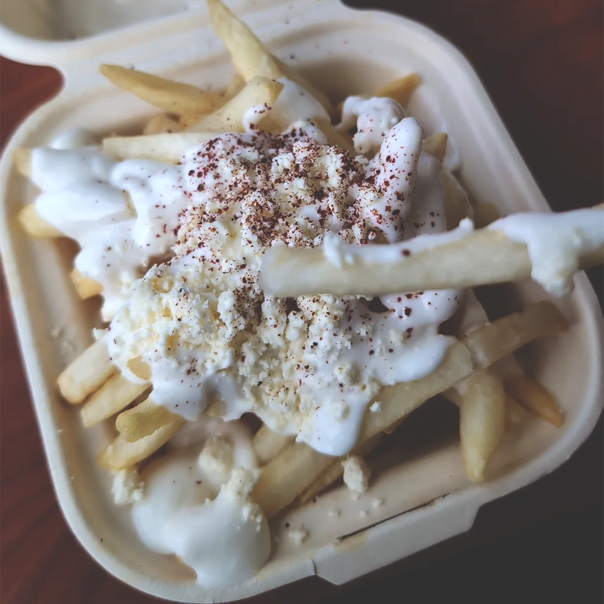
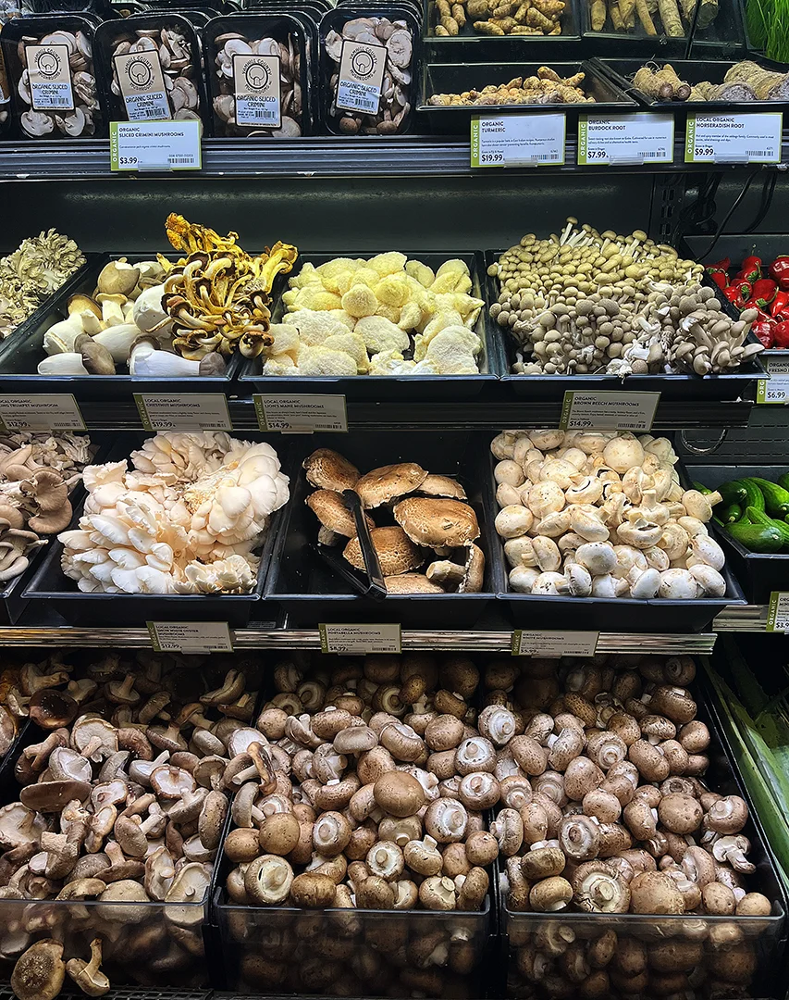
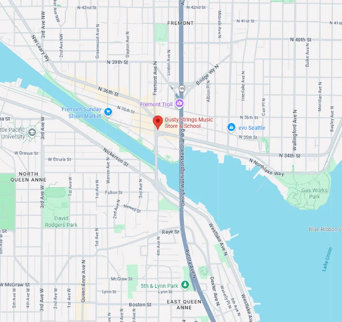
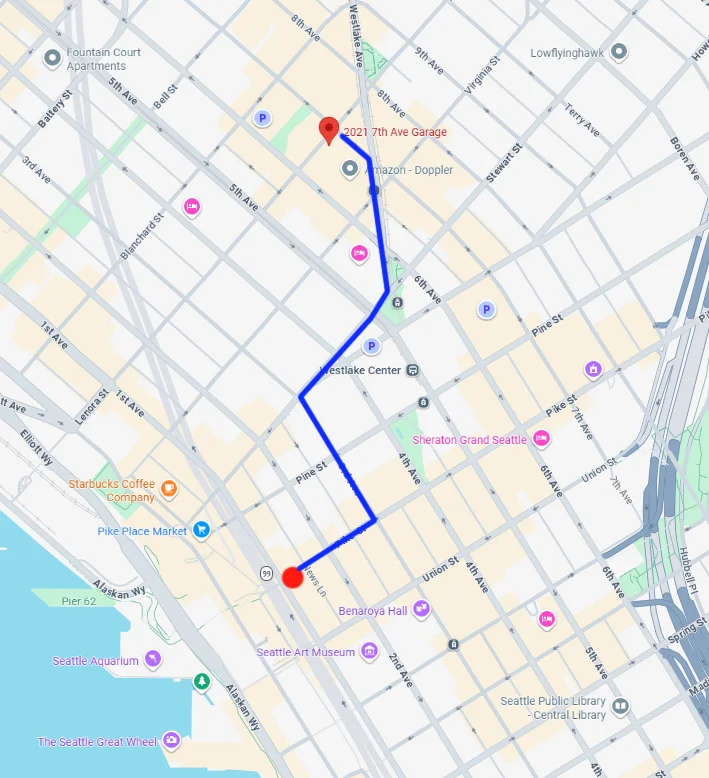
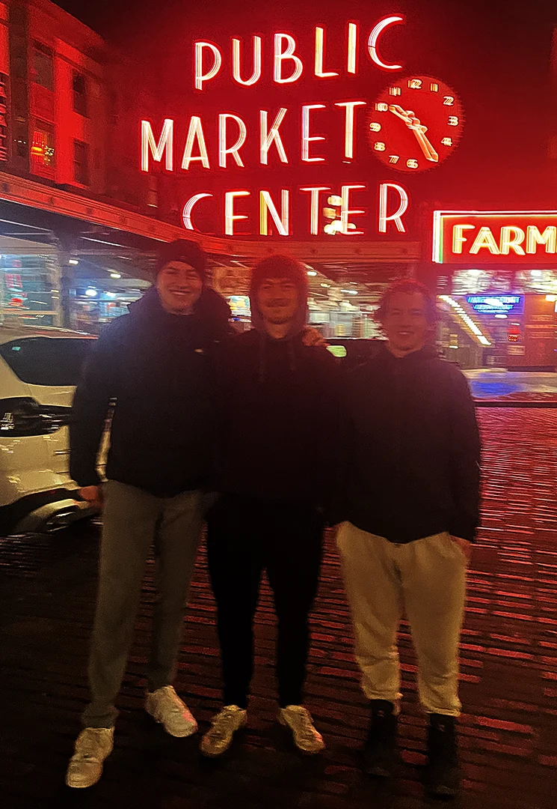

Day 2 - Ballard, Fremont, and New Friends
Breakfast and Planning
Rhett and I were excited to start our first full day in Seattle. We went to the kitchen to see what was there. They had eggs, toast, PB&J, coffee, oranges, bananas, and a few additional edible items. Rhett was stoked to make some eggs, and he asked if I wanted some. Of course, dude! He found a pan and got to work on the stove, while I wolfed down some toast, orange slices, and a banana. I washed it down with Folger's, diluted with a healthy amount of creamer.
Rhett came over with his eggs, disappointed the pan stole most of it. He offered me some, and I agreed, the pan did indeed rob him. We both pulled out our maps and discussed what we were going to do that day. He was most interested in going for a walk in Ballard, which was where we had looked at apartments online before travelling to Seattle. They looked very green and quite lovely, and I was on board for a morning stroll, so that's what we decided on once we were done with breakfast.
We got dressed and set out for the garage where we parked the car. It was probably a twenty minute walk. We found the car, put on some tunes, and rolled out of the garage with a $32 parking ticket. We agreed that we could probably find better and resolved to avoid paying that again for an overnight arrangement.
Ballard, Green Lake, and Shwarma Man
The Corolla took us out north towards Ballard, and we got our first look at the beauty of the city in the morning light. We swept through East Queen Anne, across the bridge, and exited on Leary. We tooled through the impressive cleanliness of Ballard and made our way toward the high school. The neighorhoods were exactly like the photos- clean and green, standing proudly on the hills. Rhett was so excited about all the flora!
We made our way slowly through the neighborhoods and decided we ought to just stop and walk around. We parked on Earl and took our first few breaths in the cool air. We were surrounded by incredible architecture and so much green. Rhett seemed interested in finding a certain park, so we made our way towards it. I've attached our route. On the way, we couldn't help but be impressed with the cute clusters of houses and apartments. The charm of Ballard seemed overwhelming. At one point we found ourselves at Sunset Hill Park. The Olympic mountains were in the distance, half hidden by clouds. We could make out the arrays of roads and boats below, and I just stared, wide-eyed.

We exited the lookout point, past some houses under construction, and found ourselves at the top flight of 250 steps down to the next road. I counted. Rhett and I laughed about doing going up and down those every day. There was no excuse to not be fit if you established a ritual. We carefully made our way down, and just as the sun was peeking out behind the clouds, we found the beach. I closed my eyes and let my thoughts wander as Rhett went on a short jog. I performed some yoga for the passerbys and felt centered as I let me body feel what it was like to be in Ballard, in the Northwest.

We sat in silence for awhile. Rhett eventually said something along the lines of "There's a lot more Seattle to see. Let's get outta here." We raced back up the 250 steps (such a workout) and took an alternative route back to the car, shown in purple on the map. Scanning the map for nearby points of interest, we spotted Green Lake. It was pretty close, and more bodies of water sounded like a good thing. I put the Corolla in drive, and we soon we were off east past the high school, up and over some STEEP hills.
We tooled all the way around the lake. Even on a Thursday morning the paths looked fairly occupied. I loved that the biking and pedestrian trails completed the perimeter of the lake. Along the road there were parks, soccer fields, shops, houses, restaurants, and more. It seemed a natural attraction point. I remember it leaving a grand impression on me.
Rhett was pretty hungry after all the walking and craving shwarma. We found a place a little ways north in Lake City with great reviews called Shwarma Man. It was supposedly a place of generous portions, and that it was! The staff were helpful and patient as I decided what to order. I eventually settled on a chicken wrap with fries. They didn't have many drink options, so I settled on a Sprite. For Rhett, an Indian soda.

When the food came out, it smelled delicious. It was warm and presented in a cardboard to-go box, just in case we had to bail on the lunch mission. My wrap looked amazing, but the fries covered in feta cheese stole the show. They gave us an array of sauce. Most of them were tzatziki, but there was a sort of minty & creamy sauce too, which Rhett particularly enjoyed. I ate as much as I could!
Fremont

Rhett may have been craving shwarma, but I was craving some music. I shared my thoughts on possibly going to a music store and he thought that was a great idea. We were headed back towards Seattle when he found a place called Dusty Strings in Fremont. We parked just outside of a mini Google campus with corporate offices, and checked out the PCC Co-Op market. They had a wide selection of fresh produce and lip-smacking food. Prices were actually very reasonable, maybe just an extra dollar or two per pound of fruit. I took a photo of all the mushrooms to show my dad later. Rhett and I decided to come back after we had spent time at the music store.

Dusty Strings was just a short walk away- the storefront down a flight of stairs. It had a very neat entrance, with a guitar being strummed above the door upon opening. It felt very cozy, very friendly, very professional, and very expensive. I wondered if there were hundreds of thousands of dollars worth of musical instruments and gear in a small store. Guitars seemed to be their main focus, with a good chunk of the walls covered in acoustic. Dusty Strings also housed a variety of electric guitars, a lesson room, a room dedicated for harps, and so much more. I wandered around and observed many books, pedals, and other gear while Rhett played some very expensive acoustic guitars. I talked with a very nice sales lady trying to convince me to buy a tuner pedal while he switched over to electric. Everybody could hear Rhett amped up while he played his own compositions.
Rhett's fingers eventually hurt and so we left to go back to the market. He was very interested in "chilling out" at the hostel that evening. We looked through their selection of both alcoholic and non-alcoholic drinks. I was craving something local, and we asked one of the stockers for recommendations. He picked out a few for us, and we left with a 6-pack, along with a few other grocery essentials. It was getting dark and it was time to head back.
New Friends & The Rest of the Evening

We found another parking garage near the Amazon Spheres. We hauled our groceries and our thrift store goods twenty minutes to the hostel. It was much cheaper overnight at only $22, and parking was free during the day on weekends. Rhett and I got back to the room only to fall in conversation with a German lad.

Matis was a tall 19 year old on a business trip. He mentioned something about how he can have beer in Germany but not here, so right before Target closed up for the evening, our trio went and bought him his first ever Modelo. Upon our return, we learned it was free beer night, too. Matis was educating us about the goings-on of Germany and the political turmoil over there. He would fumble for words sometimes and look them up, but he had great composure and was very laid back for a young man visiting a foreign country. Our gathering got a bit louder when we showed him the Big Lez Show, possibly causing an unwanted ruckus in the lobby, so Rhett and I asked if we could show him the jungle gym down by the docks. Matis agreed, and we spent the rest of the evening up there (see the first day for a photo of the jungle gym) and by the aquarium. On our walk back, we found a group of ladies taking pictures and asked if we could help them if they took a picture of us. They agreed, and I can't believe how poor a job they did with my phone.
We got Matis' socials and wished him a good night. Rhett and I went to the lounge to talk with the staff and hang out. They had guitars and a keyboard and an arcade machine with over 400 games on it. They even showed me how to play pinball for free! The high score was up in the millions, and I couldn't quite get on the leaderboard. Rhett was talking to a few folks when I went to bed. It was past 2...